George Williams
koha-US member and Past Presidentwww.koha-us.org
USA - Kansas is in the middle.
I am the Next Search Catalog Coordinator at
Northeast Kansas Library System in Lawrence, KS.
117 NEKLS Libraries in the highlighted area.
NEKLS provides many services to all types of libraries in north east Kansas.
The 14 highlighted counties account for approximately 44% of the population of Kansas.
Using Koha since 2008.
Community Koha hosted by ByWater Solutions since 2011.
My life before Kansas
- Originally from Idaho.
- Latah County Library District
- Circulation Manager (2006-2016).
- University of Idaho
- TA and Lecturer (2002-2006).
- Boise Public Library
- Bookmobile Specialist (1997-2002).
- University of Idaho Library
- Student Employee (1996-1997).
- +Bus driver, Restaurant manager, Cook, Dishwasher, Sophisticated man about town.
koha-US
www.koha-us.org
koha-US at KohaCon18
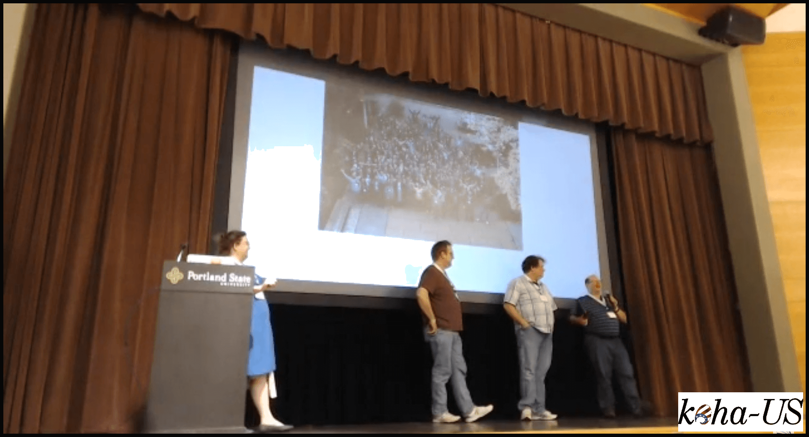
KohaCon18 koha-US presentation
Lots of people attended
KohaCon18 full group photo
KohaCon18 - Portland
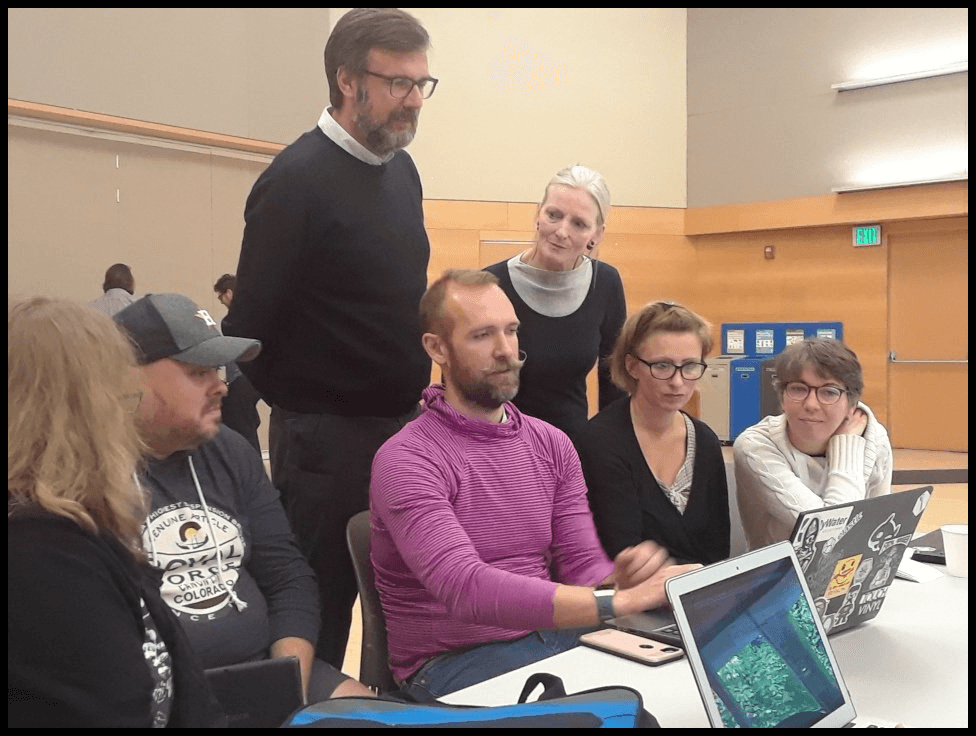
KohaCon18 Solving problems
KohaCon18 - Portland
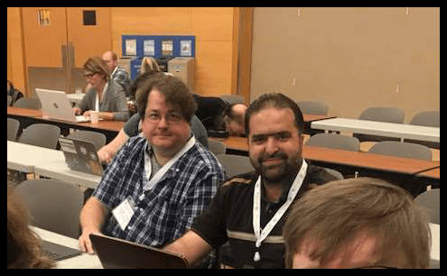
Hanging out at KohaCon18
An update of what koha-US has been doing
koha-US since 2018
Brief recap
koha-US since 2018
KohaCon13
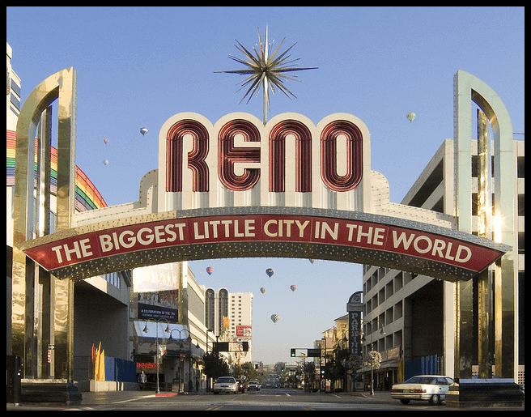
Reno, Nevada
Reno was fun!
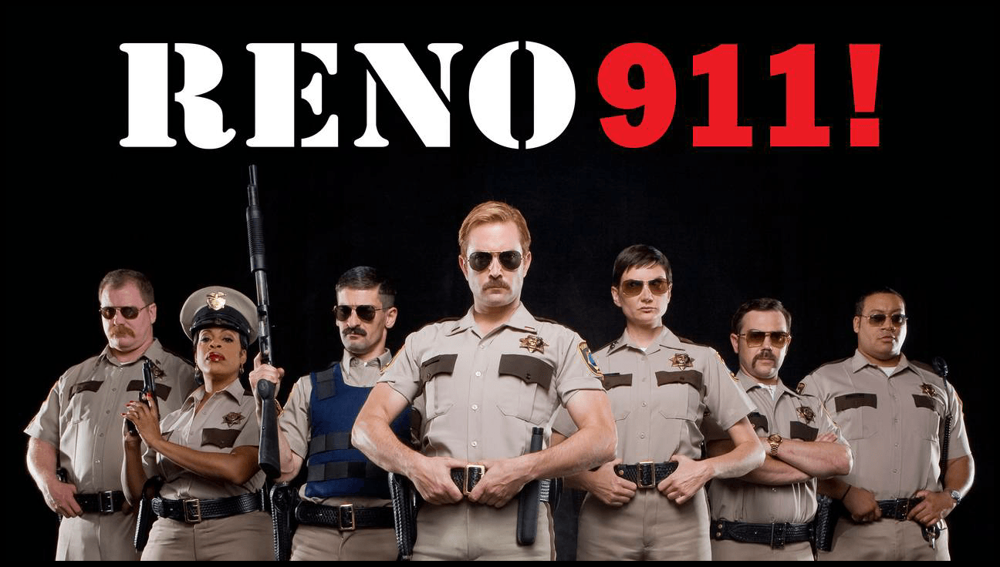
Let's get together again soon
Past conferences
Early conference locations
koha-US website
Major website update in 2018/2019
Boring financial stuff
Boring but necessary
Even more boring financial stuff
Wikipedia article on 501(c)3 click here
Tax exempt in USA
koha-US is a tax-exempt organization in the USA
Working together
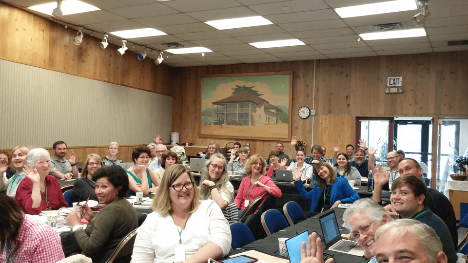
Collaborate; Learn; Unite!
Monthly meetings
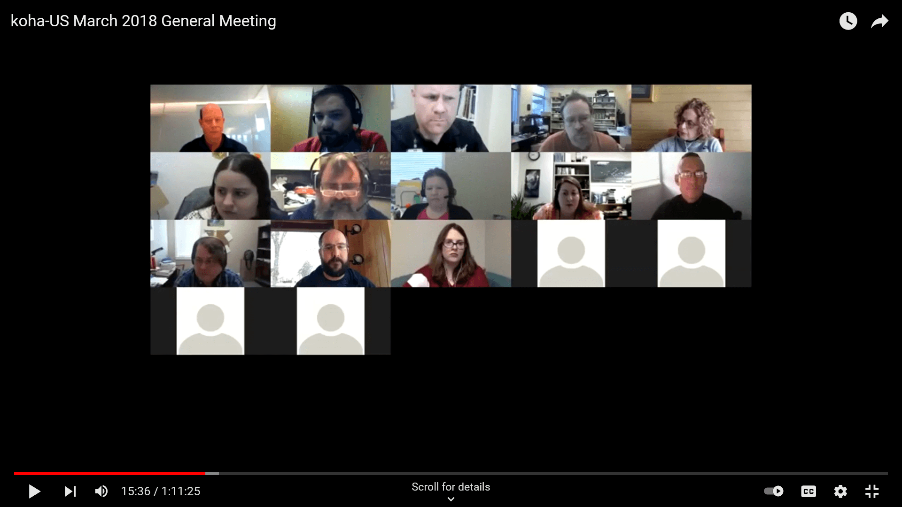
Everything's on Zoom
Links on website
koha-us.org
Calendar with links to meetings on the bottom of every page
Anyone can attend
Everyone is welcomed
YouTube
Archive of many, many meetings
https://www.youtube.com/c/kohaUS
Special interest groups

A group for just about everything
https://koha-us.org/special-interest-groups/
Special Interest Group List
https://koha-us.org/special-interest-groups/
Acquisitions: 3rd Tuesday of the month 1700 UTC
Cataloging: 1st Thursday of the month 1500 UTC
Circulation: 1st Tuesday of the month 1800 UTC
Consortia: 4th Thursday of every odd month 1400 UTC
System administration: 2nd Tuesday of the month 1600 UTC
Web development: 3rd Thursday of the month 1800 UTC
Book and crafting club: Last Wednesday of the month 0100 UTC
Special interest groups
These are all posted on the koha-US calendar with all of our other meetings
https://koha-us.org/special-interest-groups/
Anyone can attend
Everyone is welcomed
YouTube
Special interest group meetings are also archived
https://www.youtube.com/c/kohaUS
Regional user groups
Several groups in different areas
Kansas

NEKLS; SEKLS; CKLS; KanShare
Michigan
Still developing
Intermountain West
LCEI; CLiC; Several Utah Libraries
Texas
Several independent libraries
Communication
Mailing lists; Zoom
Koha development fund
koha-US wants to help fund development
Two goals
We want the development - We are hoping the developer will do more Koha work
2014-2018 Conferences
First koha-US conferences
koha-US 2019
Pueblo, Colorado
koha-US 2019
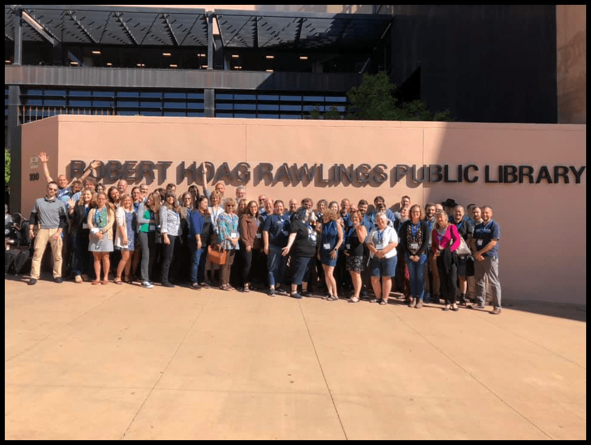
Our second conference east of the continental divide
Kohathon
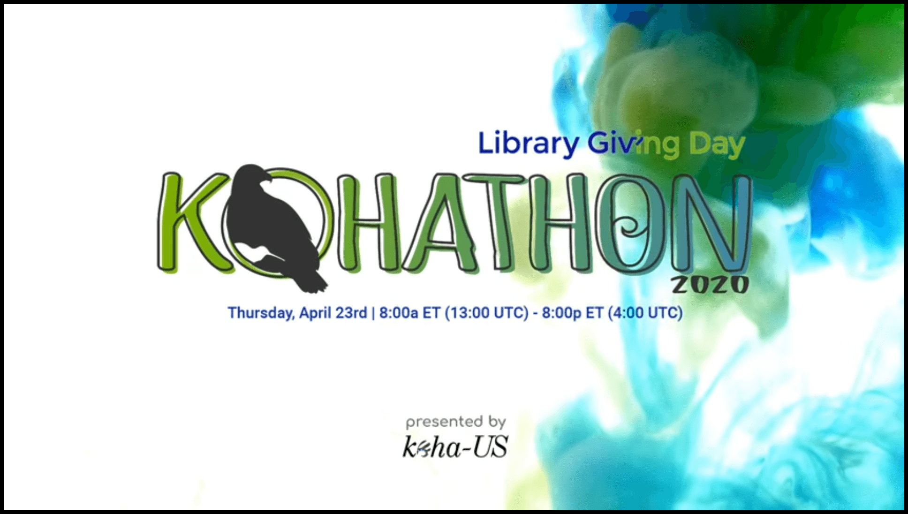
Our first 100% online conference
Fresh Perspectives Cancelled
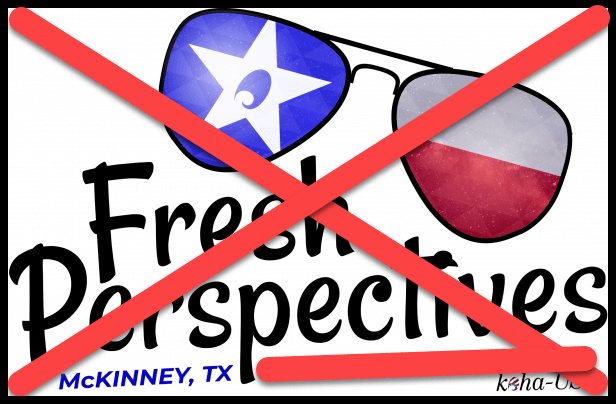
Stupid pandemic!
Online Together
Our fully online 2020 Conference
koha-US 2021
McKinney second try
Past conference presentations
2017 Conference presentation Click here
2019 Conference presentations Click here
2020 Kohathon presentations Click here
2020 Conference presentations Click here
2021 Conference presentations Click here
Every Other Thursday
Videos by a couple of fools
Every Other Thursday
Christopher and George
Every Other Thursday
jQuery
Every Other Thursday
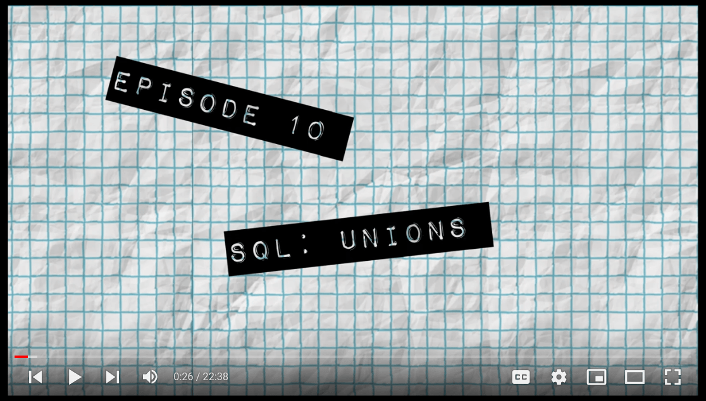
SQL
Every Other Thursday
Send suggestions to education@koha-us.org
Mentors
koha-US mentors
Mentors
New people that want help should get help
New officers for 2022
Barbara Johnson, 2022 koha-US president
Giving Tuesday
Koha Q&A
National Library Week
A second Q&A session is planned
Every Other Thursday
We've had some illnesses and some busy months
koha-US 2022
Accepting proposals
koha-US 2022
Location to be determined
Look for our website
Everything you need to know is there
http://koha-us.org
Please join us
Everyone is welcomed to attend
Slides
These slides availale at http://hopperdietzel.org
Slides
These slides availale here https://bit.ly/kohacon21